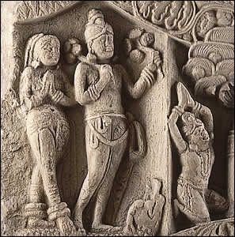

Worshippers

The Buddha had many followers during his lifetime. After his death, his followers continued to spread the teachings of the Buddha. Thus, Buddhism spread to regions near and far.
The people in this scene hold their hands together in a gesture of worship.
|